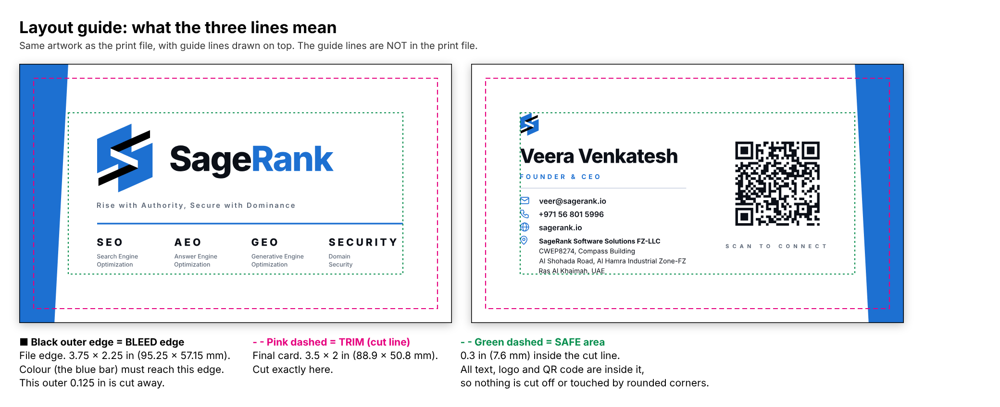

SageRank business card: print order sheet
Customer: Veera Venkatesh, SageRank Software Solutions FZ-LLC | +971 56 801 5996 | veer@sagerank.io
The job in one line: double-sided business card, full colour on both sides, final size 3.5 x 2 in (88.9 x 50.8 mm). Print the file 1_SEND-THIS-TO-PRINTER_...pdf at 100% (no scaling, no "fit to page") and cut on the trim line. Page 1 = FRONT, page 2 = BACK.
1. Exact sizes
| Inches | Millimetres | Points | What it is |
|---|
| Final card (TRIM) | 3.5 x 2.0 | 88.9 x 50.8 | 252 x 144 | Size after cutting. The cut line. |
| PDF page size (with bleed) | 3.75 x 2.25 | 95.25 x 57.15 | 270 x 162 | File size = card + bleed on all four sides. |
| Bleed (each side) | 0.125 | 3.175 | 9 | Extra colour past the cut line. Gets cut off. |
| Safe margin | 0.30 | 7.6 | 21.6 | All text, logo and QR are at least this far inside the cut line. |
| Rounded corners (optional) | 0.12 | 3 (radius) | 8.5 | If you round the corners, 3 mm radius. Nothing important is near a corner. |
The PDF has its TrimBox and BleedBox set, so your software shows the cut line automatically. Orientation: landscape.
2. Simple words
- Trim = the final size of the card. You cut here.
- Bleed = colour that runs past the cut line, so a cutting error never leaves a white edge. The blue bar touches the edge on purpose. The extra 3.175 mm is cut away.
- Safe area = nothing important is closer to the edge than 7.6 mm.
3. Printing the two sides
- Front has a blue bar on the left edge. Back has a blue bar on the right edge.
- Turn the printed card sideways like a book page (flip on the short edge). Both bars must meet at the same physical edge, and the back must read upright.
- Do NOT flip top-to-bottom: the back would be upside down.
4. Colour
- Print 4/4 (full colour both sides). The artwork is RGB: please convert to CMYK with your standard profile and send a proof.
- Brand blue: HEX #1D70D1 (RGB 29 / 112 / 209). Approx. CMYK 87 / 55 / 0 / 0 (a guide only, match the hex on the proof).
- Black: logo bars are pure black. Text is very dark navy (#0B0F17) and small: please print it as K-only black, not a 4-colour mix.
- Greys (#5B6676, #D3DAE6) are used for small text and a thin line.
5. Files and fonts
- All text is converted to outlines. No fonts needed. Logo and QR are vector.
- Do not re-draw, resize or re-colour the logo. Do not add a border.
- QR code opens https://www.sagerank.io/veer. Please scan the printed proof.
6. Paper and finish (suggestion, I am open to your advice)
350 gsm matte card, matte lamination (or uncoated). Please avoid a glossy finish over the small text. No foil, spot UV, embossing or folds. Quantity: ____________ Rounded corners: ☐ yes ☐ no
7. Layout guide (not part of the print file)

Before you print, please check: page size 3.75 x 2.25 in, 2 pages, printed at 100% | cut on the pink line | blue bar reaches the edge | QR code scans | send me a PDF proof and, if possible, one printed sample before the full run.